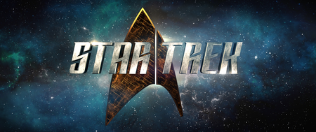

La trama de las series y peliculas de Star Trek es bastante sobria en cuanto al futuro de la humanidad, consistente en cuanto a la calidad de la historia, coherente por la continuidad de la misma y congruente con la forma de ser de los humanos actuales (que intenta demostrar que el hombre no cambiara mucho en los proximos 400 años), siempre con la «continua mision de explorar extraños, nuevos mundos, y de buscar nuevas formas de vida y nuevas civilizaciones, viajando audazmente a donde nadie ha llegado antes». Estas cualidades, sumadas a la minuciosidad de la produccion y de la selección de sus elencos han hecho de esta una saga muy solida y unica en su genero.
